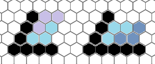
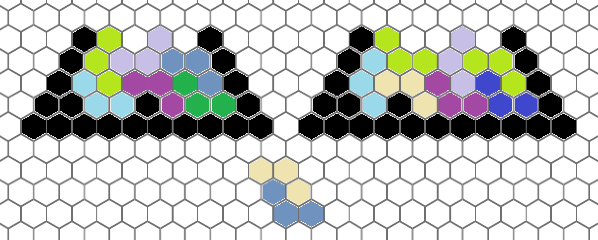

The 3rd Ucup Stage 29 赛后总结
比赛链接：https://qoj.ac/contest/1913
这场比赛的签到感觉没啥问题，也许？如果说英语水平算问题的话，那我确实读题太慢了，最需要训练的人是你呀。而且某人在队长说完之后还 WA 了一发 C 确实有点铸币了。
然后后面就陆陆续续的做各种题，队友在牢 B ，我发现 C 是 SB 就开写了。
然后等 C 过了后，队友因为有事离开，队长开始赤队友没做完的石，开始重复对吗？对的。真对吗？好像是对的的话就在我庆幸牢的不是我的时候，一个小时后回旋镖击中了我。
接着发现 G 也是 SB 后接着写，过了 G 以后开 D ，感觉也不难，就直接开了。一个小时过了 D ，一个半小时过了 B 。
写完 D 后开 E ，其实 E 如果逐步推进结论就会发现结论挺显然的，但是我一开始结论猜偏了，猜了一个等价但是繁琐很多的命题，等到后面代码写到一半了才发现了更加简单的命题，虽然实现上没变化，但是从繁琐的结论开始想实现方式还是花了不少时间，半年没打熟练度下降好快果然最该训练的人是你呀。
正常情况下这个时候应该要找队长反馈情况了，毕竟赛时知道结论后，想怎么写想了这么久有点抽象了，但是队长在牢 B ，悲，果然队伍还是要有人统领全局。（感觉我确实代码实现能力不太行，赛时如果不知道怎么写还是应该及时问队友，总之不会问队友就行了，队友总能解决的）
然后慢悠悠的写 E ，两个小时过了，不得不说，现在写代码速度也好慢，在学会 vim 后会快一点吗？不过制约我打字速度的真不是因为铸币脑子吗？
然后就是讨论 J ，虽然很不想写这坨屎，但是数据结构大师不在，显然只能我吃了，前面写个扫描线，后面的部分还好可以用树状数组 + DFS 序避免树链剖分，但依旧写了一个小时，在 2:40 的时候调完扫描线，因为线段树建树时没有给左右儿子赋值的幽默错误，甚至队长还感叹一句：“我还以为你写完了，原来才刚建完树”。中大半小时写完是什么怪物啊。
然后就是讨论 F ，说句实话，一开始就知道是半在线 NTT 了，不过一直不相信罢了，我是真不信会有人放一道裸半在线 NTT 在赛场啊。
然后因为各种原因，不信是半在线 NTT ，所以在想有没有可能有别的做法；然后主观上不太想写多项式，一直拖着；然后一开始的 dp 转移式我以为是 4 个半在线 NTT；最后有个除法，万一写完后分母是 0 就 see you again 了。虽然在正赛上肯定得写，就算是分母可能为 0 也得写，赛场上想不出正解不是大事，没 AC 才是大事。
拖拉到一个小时，队长可能也看出来我怠工了，拉我去讨论他的 M ，可惜我并不会圆反演，在提出了几个观点后就接着想 F 去了。
然后拖拉到最后四十分钟，终于准备写了，队友也复活了，队友去处理队长的 M ，我在具体写 dp 式子。（是的，我前面的转移式都仅仅是存在于脑子里面，细节什么的都还没想）
然后不喜欢动笔的习惯发力了，因为做题长时间不动笔，导致遇到这种需要动笔写转移式的题就猪脑过载，写了一半发现可以变成两个半在线 NTT ，然后接着搁那列式，思考这个转化的组合意义（我的习惯，思考明白组合意义能让我对这个转移式的正确性更有把握一点），然后过载着过载着就只剩下十分钟了，然后来不及写，直接暴寄，最后一看做法是半在线 NTT ，真放板在比赛里面啊，不是。
不过过载半小时没写出 dp 转移式也是真神人了，确实需要练习吧。怎么练习呢？平时做 dp 题之前能不能把 dp 转移式先在纸上写出来，然后争取一遍写对啊。
队友的 M 大战了许久之后没过，赛后发现不用圆反演，遂小丑。我感觉我在这道题目的问题就是我只是在听他们的做法，我并没有自己想想有没有别的简单搞法，方便最后如果过不去的话，能给队友提供多一些乱搞的选择，不过鉴于那时队友做法成型，我手里也有 F ，其实这个行为的优先级并不高。不过正赛肯定要这么干了，因为最后一小时肯定先保队长这个已经写完的题，F 肯定就丢掉了，不存在我手里还有 F 的说法。
C
tag：博弈
做法
注意到每个人接触到的数字的奇偶性相同，又注意到奇数只会被接触奇数的人删除就知道做法了，接下来就只需要讨论了。
怎么注意到的？我也想知道，队长做出来的。
1 |
|
G
tag：二分
做法
二分答案，然后每个线段能匹配的是一段前驱或者后继，随便贪心的匹配一下就行了。
时间复杂度：$O(n\log{V}\log{n})$
1 |
|
D
做法
WA 了一发，踩了一点小坑。
可以看到，难点在于无法拿走最后两堆的石头，所以如何将这两堆石头移出来是很关键的问题。
首先注意到一个事情是一个几乎连续的 $1$ 序列可以展开或者收起，即变成 10101… 或者 1111… 。
同时也可以中间的先拿完然后接着收起，即：1111… 变成 1011… 变成 111… 。
所以可以知道第一个结论，如果最后两个位置所在的几乎连续的 1 序列能够将其拉出最后两个位置，就一定可以，即左端点 $\le n-4$ ，同理，如果最后两个位置只有一个 $1$ 就是 $\le n-3$ 。
注意，这里所在的几乎连续的 1 序列是看展开后能不能接到一起，例如下面就是一个 1 序列：1110001 。
然后显然如果最后两个位置有石子且左端点在 $\ge n-2$ 的位置则显然无解。
则关键要讨论最后两堆都有石头且左端点 $=n-3$ 的情况，即：
1011 和 1111 。
1011 ：先操作 1 位置再操作 2 再操作 1，这样局面是 1110 且第 $2$ 堆为偶数，不断操作就可以变成 1010 ，可行。
1111 ：先操作掉第 2 堆石头，所以可行。
所以实际实际上是 $\le n-3$ 就可行。
时间复杂度：$O(n)$
1 |
|
E
做法
这种所有环的题优先关注 DFS 树上只包含一条非树边的环，不妨记这些环为特殊环。
首先所有特殊环的长度一定要一样，其次，可以想到，必要条件是相交的两个特殊环得到的一个环的长度也得一样。
所以可以得到特殊环的交一定得是环长一半，即 $\frac{len}{2}$。
而特殊环在树上只有 $len-1$ 的长度，故如果一个特殊环和两个特殊环有交，可以得到有交部分一定相交，进而可以得到相交部分是同一部分。
进而可以得到充要条件：特殊环等长，相交的特殊环相交于同一部分且相交部分为 $\frac{len}{2}$ 。
实现上，可以发现，如果得到环的相交部分，是通过在 DFS 树上每个点处以合并的方式处理的话，则只需要关心每个环最浅的节点的深度是多少。
所以每个点只需要维护子树到祖先的简单环中每个环最浅节点的深度，而且类似于上面结论的证明可以得到不同的深度不会超过 $2$ 个。
时间复杂度：$O(n)$ 。
1 |
|
在比赛时得到的结论要多一句：且两个环间相交的部分之间不会产生不相等且相交的关系，但实际上多想一下就知道这句话是多于的，根据 $\frac{len}{2}+\frac{len}{2}>len-1$ 可以知道，如果这个特殊环有两个不同的相交部分，则这两个部分一定相交。会多这一句话是真有点糖了，好久不训练导致的虽然可能以前也这么糖。
J
tag：扫描线，线段树
做法
首先前面部分建树，我用的扫描线，后面部分维护虚树大小，怎么写都行，可以树剖，可以线段树维护虚数形态啥的，但是这里介绍一个维护虚数的技巧。
对于一堆点，其虚树大小（包括链上的点，不止有 LCA） ，可以按照 DFS 序排序，然后相邻两个点的距离和就是虚树大小的两倍 $-2$ ，而这里类似，只不过相邻两个点之间对答案不是简单的和的贡献，可以看成对深度的区间加的操作，用线段树维护一下就行了。
时间复杂度：$O(n\log{n})$
1 |
|
F
tag：NTT
做法
就半在线卷积啊，很典的板子。
设 $f[i]$ 表示长度为 $i$ 不能分段的排列有多少个，$g[i]$ 表示长度为 $i$ 的段如果不能分段，就 shuffle ，可以分段就分段的答案（差不多定义，但是有些细节），然后转移就行了，两次半在线。
时间复杂度：$O(n\log^2{n})$ 。
1 |
|
$f$ 很显然只有一个半在线，$g$ 得到其实有点来头。
我一开始设的 $g_1,g_0$ ，$g_1$ 分段的时候会计入 shuffle 次数，$g_0$ 则是前面计入了，所以分段不会计入 shuffle 次数，但是发现好像转移式里可以把 $g_1$ 中的 $g_0$ 给化掉，所以就不需要 $g_0$ 了。思考组合意义会发现，shuffle 的次数计入是在最后一段计入的，即不能分段的时候再计入，按照这个重写一下转移式就行了，也可以先写出 $g_1,g_0$ 的转移式再化简。不过细节上还是有点区别的，但大体上是这样子。
H
tag：构造
做法
从来没有觉得做构造开心过。
首先显然不需要关心颜色的限制，因为每个点周围不超过 $25$ 个点，直接点染色就行了。
队长在赛时说应该不存在拉满的情况，我证明了一下：

不考虑拉满，只考虑能不能把最后一行填满，可以发现，无论哪种方法，最后一行占用几格，就一定需要占用上面那行同样多格，而两行格数不一样，必然会空出一格。
而显然总格数 $\mod{3}\equiv 1\mathrm{或者}3$，所以一定不可能在拉满的同时让三个底行同时有一个空格，故一定拉不满。
考虑三行三行递归构造，根据 $\mod{2}$ 来讨论，如果最后一行是奇数行，就空出 $1,4$ 格，然后倒数第四行占据 $1,3$ 格，偶数就反过来，在 $n\ge 7$ 时都可以这样递归讨论。
每三行后面的部分用平行四边形填满就行了，然后 $n\le 6$ 随便搞搞就行了。

上面的方案可能和代码中的不太一样，赛时的构造方案没保存就删了，我也懒得去对着代码重新画一遍，手动构造一遍快多了。
时间复杂度：$O(n^2)$
1 |
|
构造想了挺久的，首先在想存不存在一个不用递归的显示构造，后面发现构造不出来。
遂考虑递归，考虑每次处理最后几行，根据前面的思路可以知道，如果要保证不空出更多的空格，填完最后几行的同时，要把上一行的一些格子也给填上，保证上几行在递归的时候不会空出这些格子出来。
由于显然可以拼出一个面积为 $6$ 的平行四边形，所以一开始想的是两行两行按照 $\mod{3}$ 讨论，但是很快发现不对劲，讨论量很大，而且两行的空间太小。而且要空几格是根据 $n\mod{3}$ 来的，以两行的步长减少 $n$ 很不对劲。而且每两行 $\mod{3}$ 的情况不一样，会出现最后一行需要空的格子数并不统一的情况，相当的麻烦。
所以后面开始三行三行、根据 $\mod{2}$ 讨论，手玩每次最后一行空出一格的情况，大战三百回合不可战胜，由于肯定会空出 $3$ 或者 $4$ 格，所以决定手玩最后一行空出两格的情况，大战三百回合依旧不可战胜。
在过了许久之后写暴力来帮忙找这个循环，发现奇数空 1,4 ，偶数空 1,3 ，可以很好的循环下去，遂做完。
要说怎么精简这个流程，我认为能精简的地方只有我早一点写暴力，这个思路我确实手玩不出来，主要之前我主观上是不太想过度依赖暴力来完成构造的，认为这样不能锻炼思维。
但是这个思路最后用程序跑完后就知道，如果自己手玩来构造这个会浪费大量的时间，而且按照我那种手玩方法，和乱试没什么区别，稍稍有条理一点而已，因此手玩的过程也谈不上什么锻炼思维，只是人工的进行了暴力的过程。所以就释怀了，感觉以后如果可以暴力辅助构造就还是写暴力吧，别把时间浪费在人工模拟暴力上面。
在写博客的时候突然意识到我好像没有用暴力找是否存在空一格的循环，遂尝试了一下，结果发现似乎在 $n\le 11$ 找不到。
下面是暴力的代码：
1 |
|
说起来也是蠢，当时还想用暴力输出方案，但实际上只要知道是空出哪几格后，手动构造方案很快的，没必要浪费那个时间去改代码输出方案。